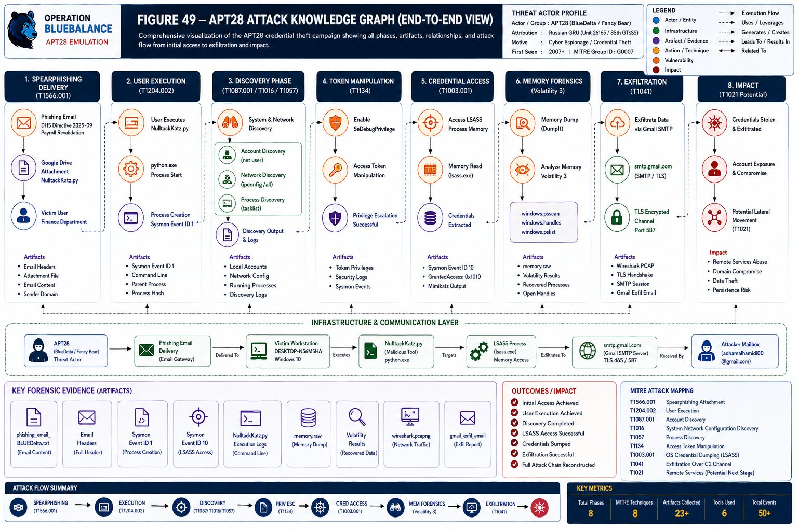
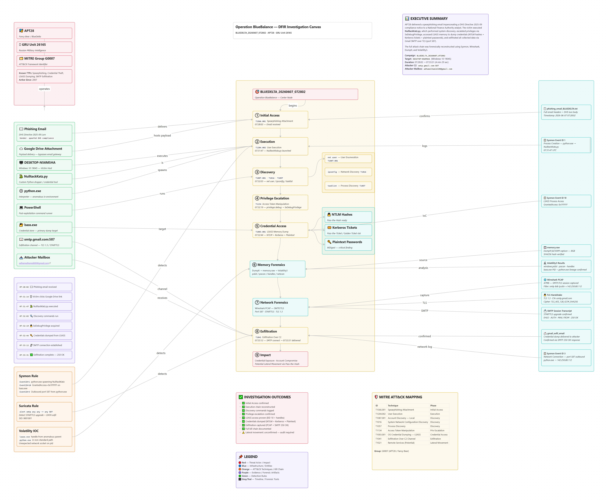

APT28 (Fancy Bear / BlueDelta) threat emulation exercise simulating the complete GRU Unit 26165 kill chain — spearphishing through credential dumping to confirmed Gmail SMTP exfiltration. All nine attack phases were detected and forensically validated.
Russian GRU Military Unit 26165 — state-sponsored cyber espionage active since 2007, targeting government, military, finance, energy, and political organizations globally.
| MITRE Group ID | G0007 |
| Also Known As | Fancy Bear · BlueDelta · Sednit · Sofacy · STRONTIUM · Forest Blizzard · Pawn Storm |
| Attribution | Russian GRU — Military Unit 26165 (85th GTsSS) |
| Active Since | 2007 (publicly identified ~2014) |
| Motivation | Political espionage · credential theft · election interference · intelligence collection |
| Primary Sectors | Government · Military · Finance · Energy · Media · Political |
| Related Units | Sandworm (GRU Unit 74455) — destructive ops |
| Key Malware | X-Agent · XTUNNEL · Sofacy · Zebrocy · LoJax UEFI rootkit |
| Exfil Methods | SMTP/TLS · HTTPS C2 · OneDrive/Dropbox blend · XTUNNEL encrypted tunnel |
Nine techniques confirmed across the complete attack chain. All mapped to verified forensic evidence from Sysmon telemetry, Wireshark PCAP, and Volatility 3 memory analysis.
| Technique ID | Technique | Tactic | Detection Method | Status |
|---|---|---|---|---|
| T1566.001 | Spearphishing Attachment Initial Access |
Initial Access | Email header analysis · sender mismatch · DMARC enforcement |
✓ Confirmed |
| T1204.002 | User Execution: Malicious File |
Execution | Sysmon EID 1 · python.exe + NulltackKatz.py process creation |
✓ Confirmed |
| T1087.001 | Local Account Discovery |
Discovery | Sysmon EID 1 · net user command-line detection |
✓ Confirmed |
| T1016 | System Network Config Discovery |
Discovery | Sysmon EID 1 · ipconfig /all execution |
✓ Confirmed |
| T1057 | Process Discovery |
Discovery | Sysmon EID 1 · tasklist execution |
✓ Confirmed |
| T1134 | Access Token Manipulation |
Privilege Escalation | Sysmon EID 1 · privilege::debug · SeDebugPrivilege grant |
✓ Confirmed |
| T1003.001 | OS Credential Dumping: LSASS |
Credential Access | Sysmon EID 10 · GrantedAccess=0x1010 on lsass.exe · Volatility handles |
⚠ Critical |
| T1041 | Exfiltration Over C2 Channel |
Exfiltration | Wireshark TLS SNI smtp.gmail.com · Sysmon EID 3 port 587 · Suricata |
✓ Confirmed |
| T1021 | Remote Services (Lateral Movement) |
Lateral Movement | NTLM hashes available for Pass-the-Hash · EDR monitoring required |
⚡ Risk |
Two complementary visualizations — each answering a different analytical question. Figure 49 provides the executive view; the Obsidian Canvas provides the analyst investigation workflow. These are not duplicates.


Every event anchored to a confirmed evidence source. Complete attack chain from phishing delivery to memory forensics. Automated phase: 40 seconds total.
All indicators validated by 2+ independent sources. Ingest into SIEM, EDR, and threat intelligence platforms immediately. Full CSV: IOC_Master_Table.csv
null route 142.251.127.108 & 142.251.127.109
block outbound TCP/587 from workstation VLANs
block: anmarma100@gmail.com, anmar@nulltack.com
reset: Shell, Administrator credentials NOW
invalidate: krbtgt x2 (24h interval)
All rules derived from confirmed forensic evidence from Campaign BLUEDELTA_20260607_072802. Deploy to your SIEM, EDR, and network detection stack immediately.
Complete IR playbooks for Campaign BLUEDELTA_20260607_072802. Prioritized by urgency: CRITICAL (immediate) → HIGH (<1 hour) → MEDIUM (<24 hours).
Windows Credential Guard was not deployed. Had it been enabled, T1003.001 (LSASS credential dumping via Mimikatz) would have been completely prevented — the attack chain would have failed at step 5 with no credential extraction and no exfiltration. A single Group Policy change + reboot would have stopped this attack entirely.